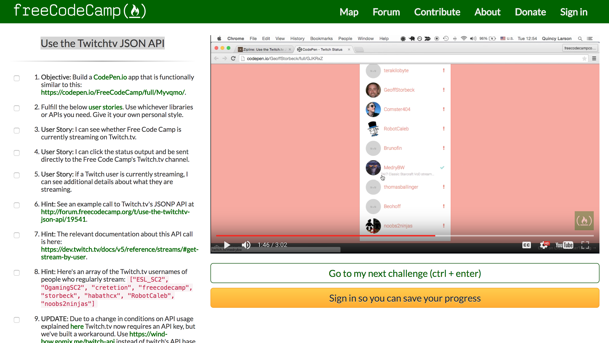

Twitch.tv JSON API
NOTE: for security reasons, I removed my api key from github.com
You must supply your own api key for app to work. Here's how:
- Clone twitch_api project from github.com.
- Change directory into that project folder.
- Make a file named keys.js and put your Twitch.tv client_id in it:
- Copy that file into the resources folder. Like this:
git clone https://github.com/code-42/twitch_api.git
cd twitch_api
touch resources/keys.jsecho "var client_id='PUT YOUR REAL CLIENT ID HERE';" > resources/keys.js
Now start your web server and run index.html on localhost, or something. When you do that, this message will not apprear.
